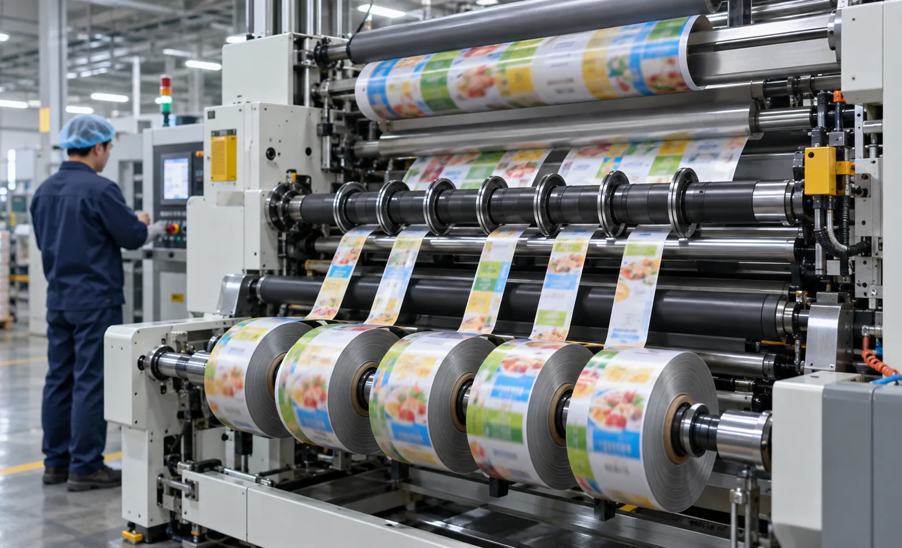
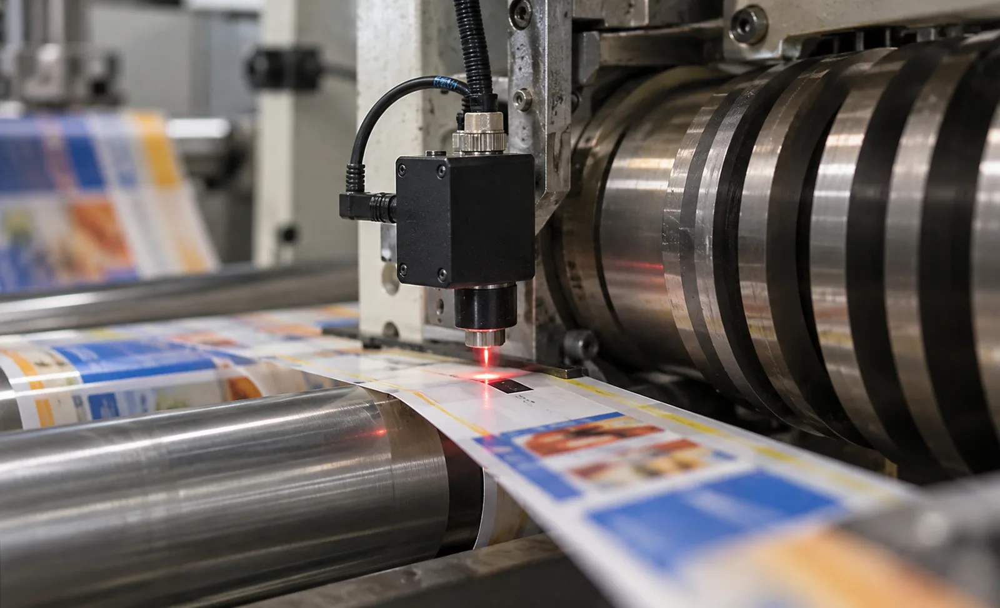

Published September 24, 2026 | By HDPTH Technical Editorial Team

Most slitting jobs only need straight lines at fixed pitch. Printed products — labels, sachets, pouches, medical packaging — add a second constraint: the cut must fall in the gap between repeats. That requirement changes the control architecture, the sensors and the acceptance test. It is also where the cheapest machines quietly fail, because they treat the print as perfectly pitched and it never is.
Print marks and the sensor that reads them
Register control needs something on the web to see:
- Registration eyes: dedicated contrast marks printed for the machine, usually the most reliable.
- Colour patches or bars: already printed for process control; usable if contrast is high.
- Printed edges and gaps: weaker signal, needs careful sensor setup.
- Die-cut or perforated features: invisible to contrast sensors, detected ultrasonically.
The sensor is a photoelectric contrast detector with interchangeable light sources — red, green, blue, white or laser — chosen by the mark, not the vendor. Dark marks on light film suit almost anything; a light mark on a dark background may need a specific colour channel; glossy surfaces can need polarised light. Fibre-optic heads survive vibration better, and the spot must sit fully inside the mark at full speed and web wander. Our guide to web guide sensors covers that alignment job.
Detection logic: from mark pulse to knife timing
Reading a mark is the easy part; turning it into a cut is the control problem. The encoder measures web travel, the sensor fires a pulse per mark, and the control learns the repeat pitch and phase, then predicts when the next mark arrives at the knife and commands the cut at the programmed offset — leading or trailing edge. Robust systems add a detection window that ignores spurious pulses, alarm on missing marks and handle skipped repeats. Ask how the system behaves on a misprinted mark: the good answer is a defined reject-and-alarm sequence.
Repeat-length deviation compensation
Printed repeats are not identical. Print stretch, plate cylinder differences, substrate elongation under tension, humidity and temperature all move the true mark position by fractions of a percent — on a 500 millimetre repeat that is millimetres across a long roll, far beyond the cut window. Compensation closes the loop: the control compares each measured mark position with the predicted one and trims knife timing or web length continuously. A machine limited to a fixed encoder pitch will drift out of register over a roll. Insist on seeing the deviation display in the demonstration — the trace should stay flat, not sawtooth.
Fixed lanes versus driven knives
Two architectures cover the market. If the print layout puts slitting lines in the gaps, fixed shear knives work — but the print must arrive at the blades in the right phase, so the machine needs upstream web correction and register monitoring. True cut-to-register, where the cut position varies repeat by repeat, needs a driven rotary knife phase-locked to the marks. Buy the architecture that matches your job structure; retrofitting driven-knife capability later costs more than specifying it up front.
| Decision | What to specify | Why it matters |
|---|---|---|
| Marks | Provide printed samples: mark type, colour, background, varnish, minimum gap | Decides sensor type and whether detection is reliable at all |
| Sensor | Contrast sensor with selectable light source; ultrasonic for die-cut features | Wrong wavelength on the wrong mark reads intermittently |
| Knife drive | Fixed shear for gaps on pitch; driven rotary knife for variable cuts | Architecture must match the job structure — it cannot be patched later |
| Compensation | Continuous correction from measured mark positions, with a live error display | Encoder-only timing drifts as print stretch and roll build change the repeat |
| Missing-mark logic | Detection window, skip handling, alarm and defined reject behaviour | A smudged mark must trigger a controlled response, not a cut through artwork |
| Acceptance | Cut-to-mark deviation spread over a full roll at speed, on your samples | Average position hides the outliers that scrap product |

Slitting printed material?
Send HDPTH your printed samples or artwork layout, repeat pitch, mark design and line speed. We will configure the register control — sensor, knife drive and compensation — and quote it with the machine.
Submit Your Project InquiryFrequently asked questions
How does cut-to-register slitting work on a slitter rewinder?
A photoelectric sensor reads a printed mark — a registration eye, colour patch or printed edge — on each repeat of the web. The control counts repeats with an encoder, predicts where the mark will arrive at the knife, and fires a rotating knife or adjusts the shear position so the cut lands in the gap between images rather than through them. Where knives are fixed, as in lane slitting, the machine instead corrects web position so the print sits correctly against the blades. The buyer’s job is to define the marks, their contrast and the allowed cut window.
What kind of print mark sensor is best for cut-to-register slitting?
A contrast sensor with a fibre-optic or compact head, choosing the light source — red, green, blue, white LED or laser — that maximises contrast against mark and background. Coloured marks on dark backgrounds often need a specific colour channel, and glossy films may need polarisation. Ultrasonic sensors detect die-cut or perforated features invisible to contrast sensors. Ask the supplier to prove detection on your samples at production speed, including the worst-case patch.
Why does the machine need repeat-length deviation compensation?
Because printed repeats are never perfectly equal. Print stretch, plate cylinder wear, substrate elongation and humidity all change repeat length by fractions of a percent. A machine that fires every 500 millimetres on the encoder alone slowly drifts out of phase with the print. Register control measures actual mark positions and trims knife timing or web length continuously so the cut stays inside the specified window across the whole roll.
Can a fixed-knife slitter rewinder do cut-to-register work?
Partly. If the product layout puts the slitting lines in the print gaps, a fixed shear can cut between images, but the print must be held to the blades, so the machine needs web correction and register monitoring upstream. True cut-to-register — where the cut position varies repeat by repeat — needs a driven knife phase-locked to the print marks. Match the machine to the job structure: variable cuts need driven knives, fixed lanes only need alignment and monitoring.
What should a cut-to-register acceptance test prove?
Run the buyer’s printed samples at production speed and measure the distance from each cut to its reference mark across the full roll: the spread, not the average, is the registration quality. Include the slowest and fastest speeds, a full-diameter unwind, splices if they occur in production, and a missing-mark test. Agree the measurement method and reject limit in the contract.
Sources
- TAPPI: technical resources on web converting, printing and finishing
- Sensor industry references: photoelectric contrast sensors for print mark detection
- ISO 12100: risk assessment and risk reduction for machinery
- Printing industry association references on registration control and repeat measurement